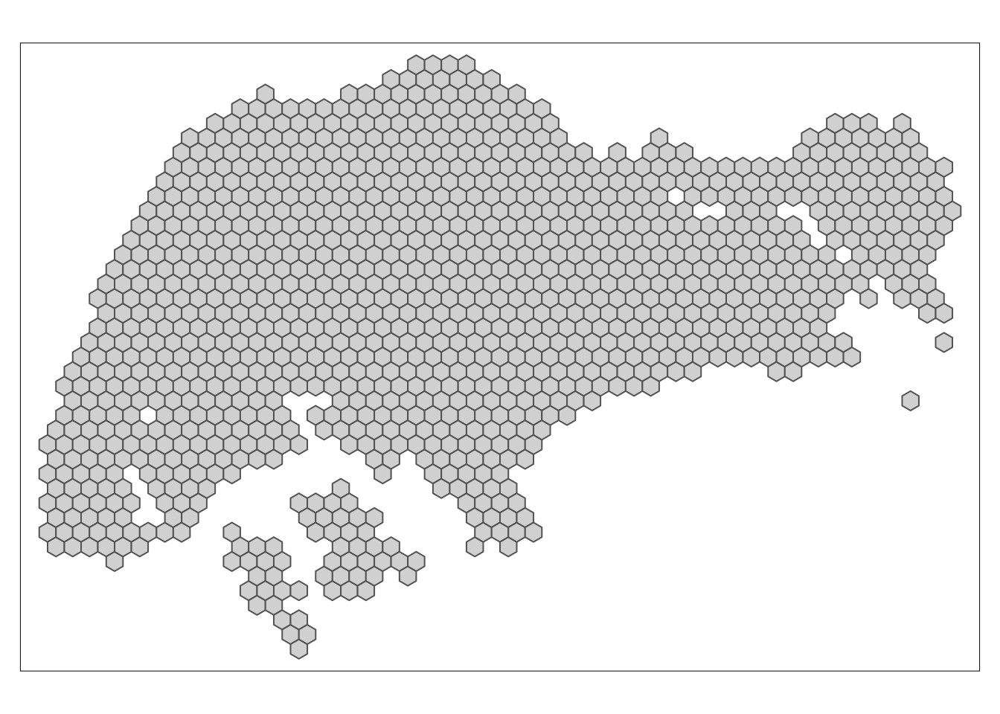
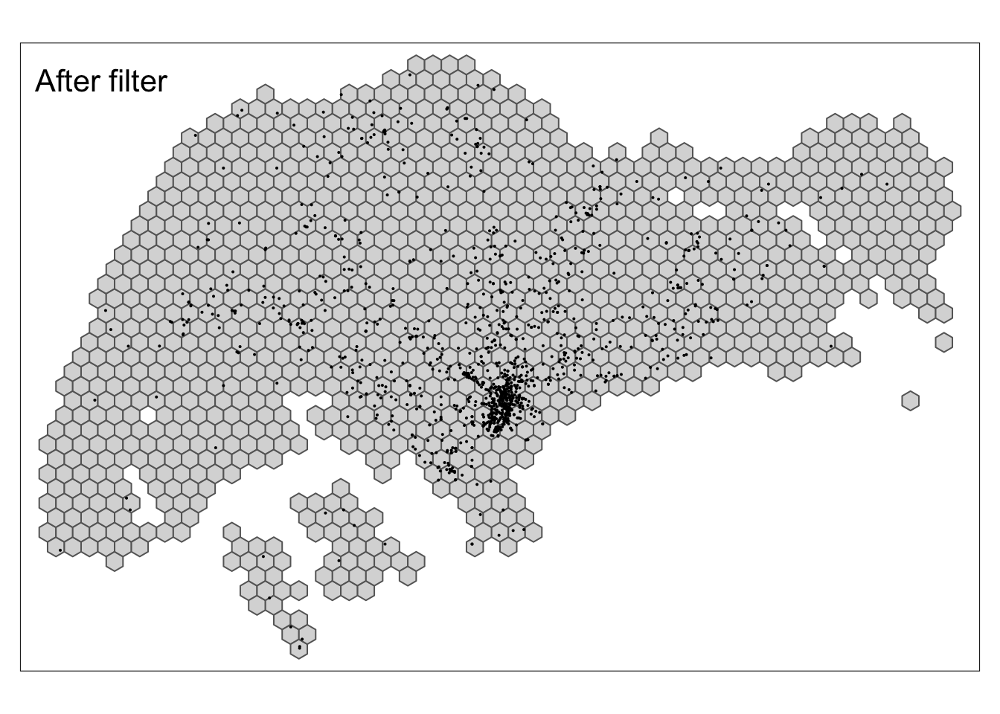
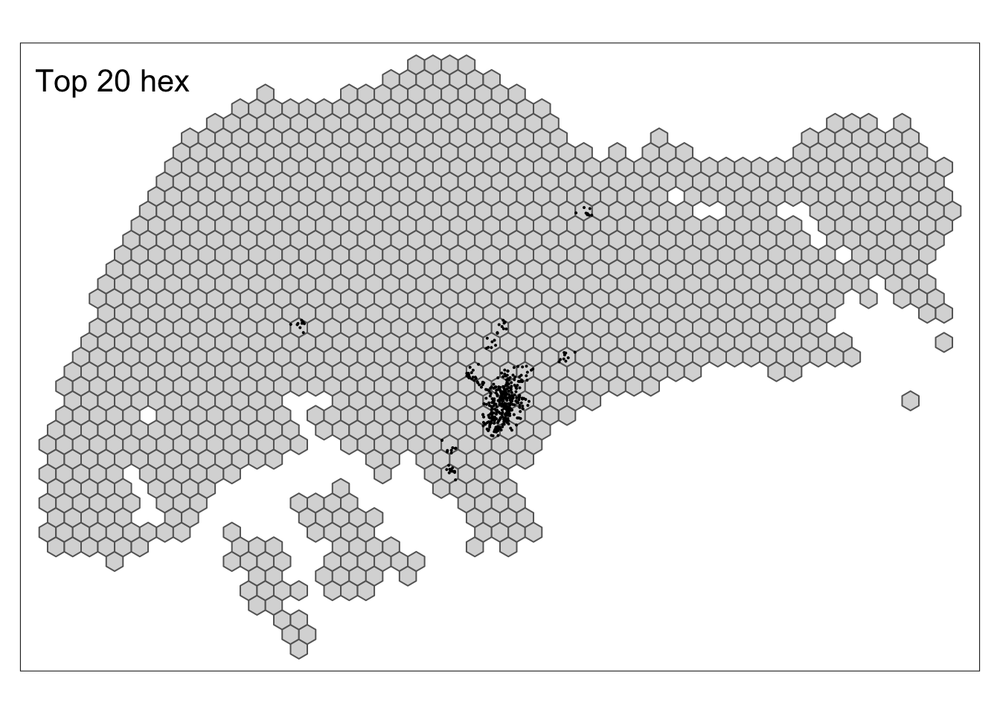
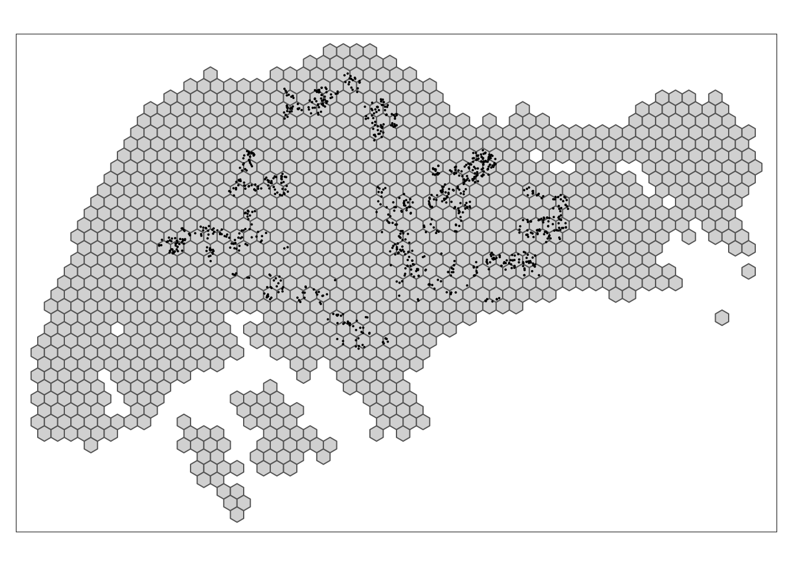
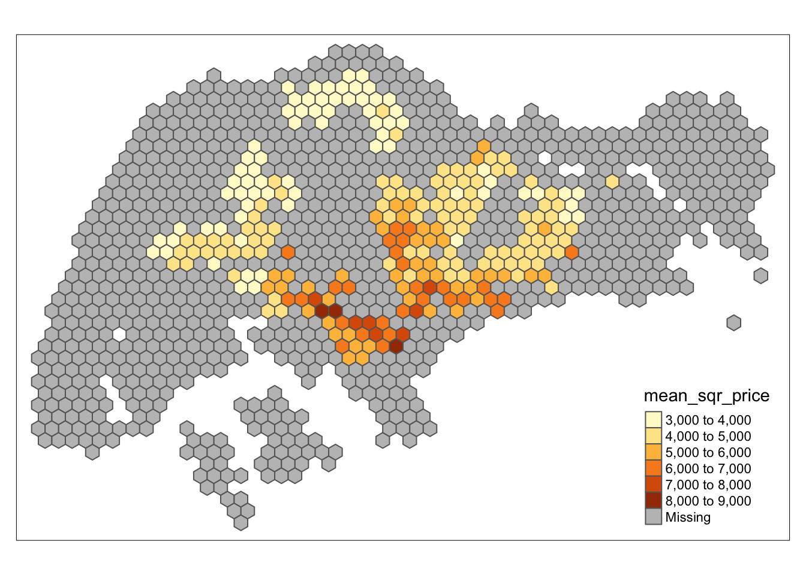
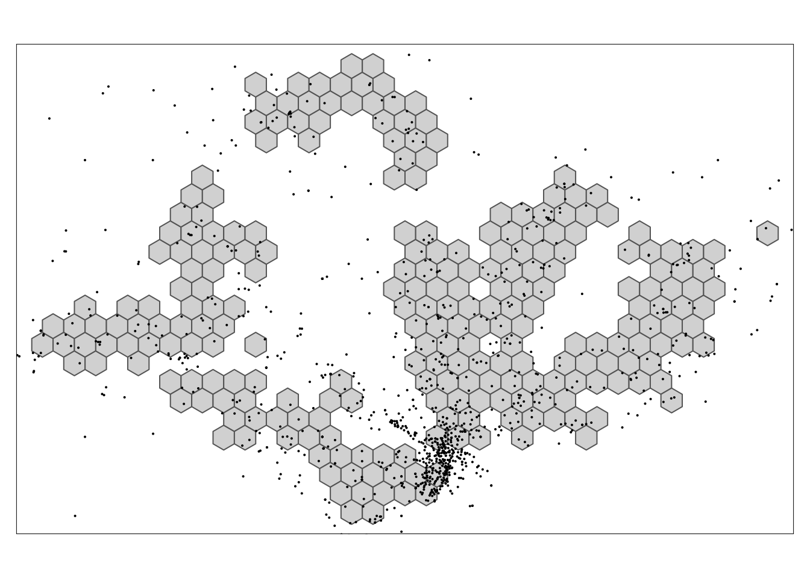

Chapter 2 Prepare data
2.1 Wikipedia data
2.1.1 change singapore to hexagons
The hexagon divides singapre as a unit of 1 km. Each hexagon grid will be attributed unique id as hex_id.
# singapore
singapore <- st_read(here::here("project-data/singapore_outline/singapore_outline.shp")) %>% st_transform(crs=4326)## Reading layer `singapore_outline' from data source `/Users/yaya/Desktop/Liu/liu-nuozhi/project-data/singapore_outline/singapore_outline.shp' using driver `ESRI Shapefile'
## Simple feature collection with 1 feature and 1 field
## geometry type: MULTIPOLYGON
## dimension: XY
## bbox: xmin: 2667.538 ymin: 15748.72 xmax: 56396.44 ymax: 50256.33
## proj4string: +proj=tmerc +lat_0=1.366666666666667 +lon_0=103.8333333333333 +k=1 +x_0=28001.642 +y_0=38744.572 +datum=WGS84 +units=m +no_defs# hex
hex <- singapore %>% st_transform(crs = 3414) %>% st_make_grid(cellsize = 1000, square = F) %>% st_transform(crs=4326) %>% st_sf()
hex$hex_id <- hex %>% rownames()
qtm(hex)
## The total number of hexagons: 1141## Rows: 1,141
## Columns: 2
## $ geometry <POLYGON [°]> POLYGON ((103.6057 1.216125..., POLYGON ((103.6057 1…
## $ hex_id <chr> "1", "2", "3", "4", "5", "6", "7", "8", "9", "10", "11", "12…2.1.2 Remove locations outside Singapore
## Rows: 1,233
## Columns: 5
## $ lat <dbl> 1.232600, 1.366347, 1.334167, 1.451389, 1.376631, 1.211700, 1.…
## $ lon <dbl> 103.5327, 103.5484, 103.5494, 103.5889, 103.5918, 103.6125, 10…
## $ pageid <dbl> 13108718, 1838457, 6170311, 5073671, 5974898, 3956978, 6110331…
## $ title <chr> "Masjid Al-Mawaddah", "Port of Tanjung Pelepas", "Pulai River"…
## $ text <chr> "Masjid Al-Mawaddah is a mosque located in Sengkang, at the j…# wiki -> sf
wiki_sf <- wiki %>% st_as_sf(coords=c("lon", "lat"), crs=4326)
# How many points out of boundary?
wiki_sf_sg <- wiki_sf %>% st_filter(hex) # filter wiki sf
wiki_not_in_boundary <- wiki$title %>% setdiff(wiki_sf_sg$title)
wiki_not_in_boundary %>% length() %>% cat("There are ", ., "points out of the boundary.")## There are 93 points out of the boundary.map_sg <- tm_shape(hex) + tm_polygons()
map_sg + tm_shape(wiki_sf) + tm_dots() + tm_layout(title = "Before filter")
The dataset consists of 1233 wikipedia pages of locations. Each locations has its geocoordinate, page id, title of the page and the content of the article. From the glimpse of the data, we can see the dataset contains 5 columns: lat, lon, pageid, title, text. There are 1233 articles in the total datasets.
At very primary look at the dataset, most of locations are close to central area. There are 108 points may locate in Malaysia which drop outside of the Singapore boundary. Here filters the dataset which only includes locations within Singapore. As as result, there are 1140 locations with Wikipedia pages.
2.1.3 binding points with hex_id
In this step, each locations will be assign a hex_id by checking the point is within the hexagons.
qtm(hex) +
wiki_sf_sg %>%
count(hex_id, sort = T) %>%
top_n(20, n) %>%
qtm() + tm_layout(title = "Top 20 hex")
There are 381 hexagons which have been assigned to each wikipedia locations, while there are 1140 wikipedia locations in total.The plot above shows the top 20 hexagons which contain the most number of points. From the map, we can see central area has high density of listed location on Wikipeda. Besides some few hexagons show other parts Singapore also have relative dense locations on Wikipedia such as Tampinese, Sengkang and Punngol, Ang Mo Kio, Queestown and Jurong East.
2.2 Housing
2.2.1 import housing location
2.2.2 binding housing to hexagon

house_hex <- house %>% st_set_geometry(NULL) %>% group_by(hex_id) %>%
summarise(mean_price = mean(resale_price),
mean_area = mean(floor_area_sqm),
mean_sqr_price = mean_price / mean_area,
mean_lease = mean(remaining_lease))
hex %>% left_join(house_hex) %>% tm_shape() + tm_polygons(col = "mean_sqr_price")## Joining, by = "hex_id"
The same processing as the wikipedia page, the houses locations are aggregated by the same hexagons. Each hexagons will contain an average housing price for per meter squre. It is not surprsing to see the central area will be the most expensive.
2.3 Wiki in conjunction with House
# wiki_hex <- st_filter(wiki_sf_sg, house_hex)
wiki_hex <- wiki_sf_sg
qtm(house_hex) + qtm(wiki_hex)
Since we need to examine the relation between wiki description and housing prices. It will require to filter out some locations outsdie the hexagons of housing.